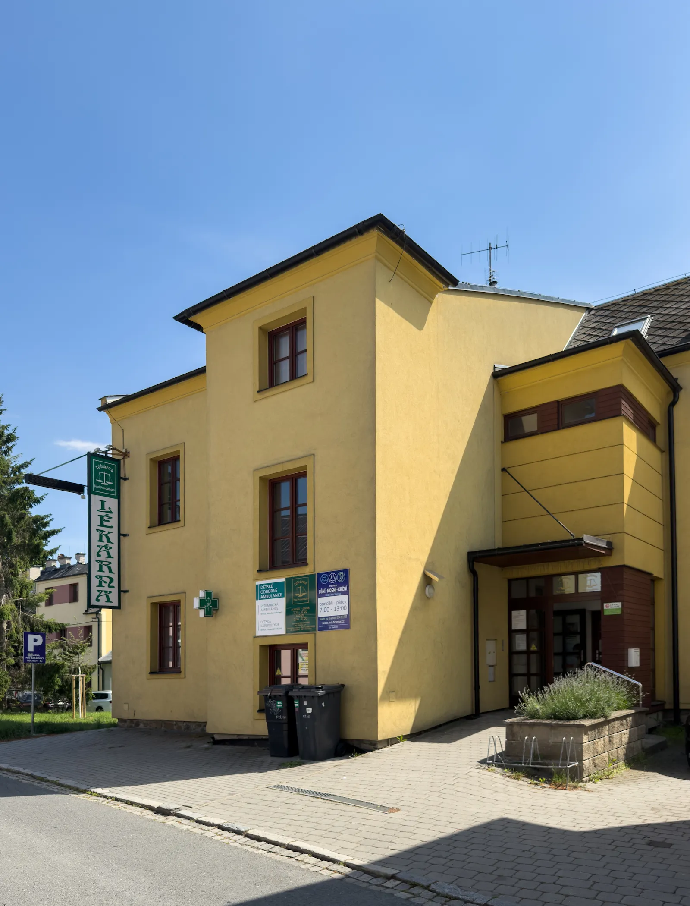
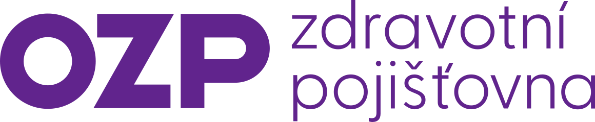
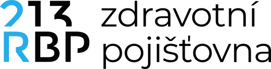
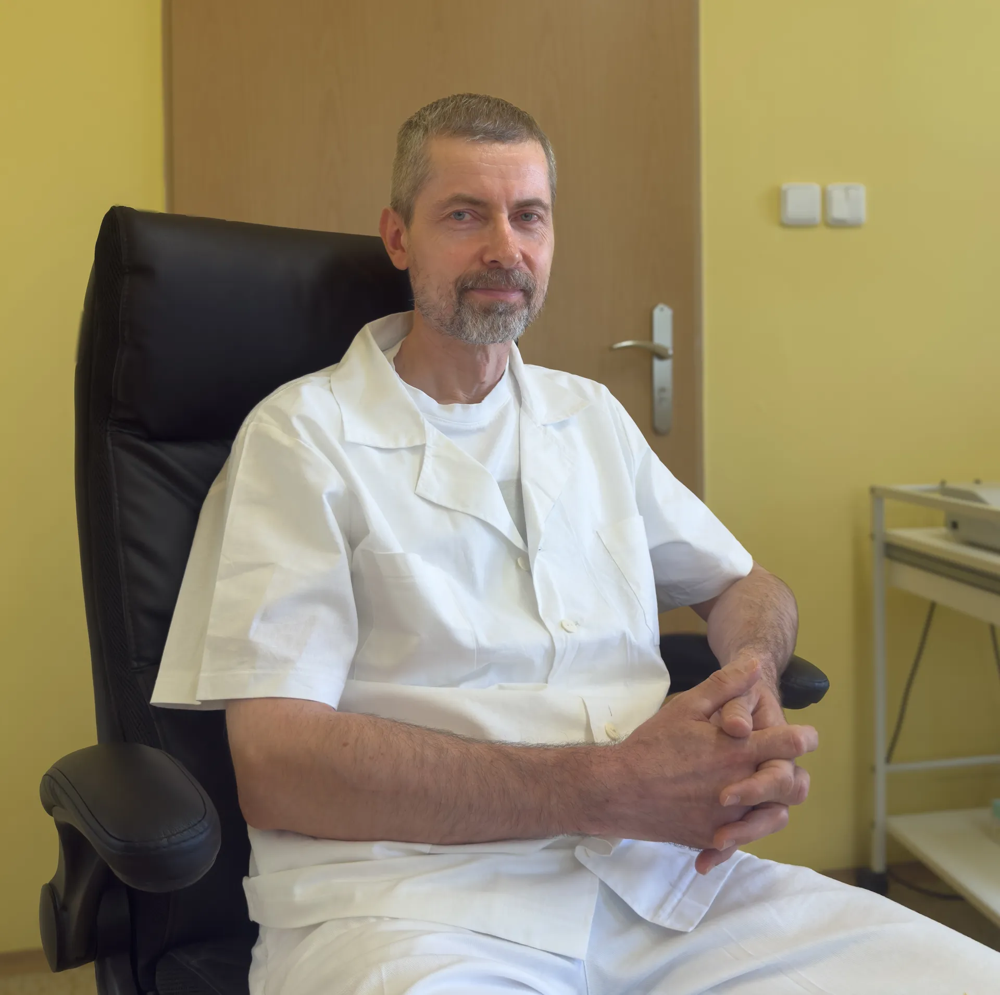

Ušní, nosní a krční ordinace v Bruntále.
Diagnostika a léčba onemocnění uší, nosu a krku. V Bruntále ordinujeme od roku 2000.

Organizace péče
Pacienty objednáváme telefonicky na čísle 554 713 997. Čas objednání je pouze orientační — akutní a neodkladné případy mají vždy přednost, proto prosím počítejte s časovou rezervou.
Objednaní pacienti
Objednané pacienty volá sestra jménem. Termín je orientační — počítejte prosím s časovou rezervou.
Akutní bez objednání
Přijímáme zpravidla mezi 8:00 a 11:00. Ošetřujeme je ve volných chvílích mezi objednanými, proto počítejte s delší čekací dobou.
Urgentní stavy
Neodkladné případy — například pacient přivezený záchrannou službou — mají vždy absolutní přednost.
Pokud nechcete dlouho čekat
V běžných případech — bolest v krku, uších nebo respirační infekce — vám stejně dobře a s kratším čekáním pomůže váš praktický lékař.
Objednat se můžete i na jiné ORL pracoviště, například v Krnově, Rýmařově, Opavě nebo Olomouci.
Pohotovost
Slezská nemocnice Opava
Pohotovostní ORL ambulance, přízemí bloku D, pavilon V.
Po–Pá 15:30–7:00, o víkendech a svátcích nepřetržitě.
553 766 363
ORL klinika, Fakultní nemocnice Olomouc
588 442 827
Další ORL pracoviště v okolí
- MUDr. Poloni — poliklinika Krnov · 554 620 025
- ORL nemocnice Krnov — budova B, jen út a čt 7–11 · 554 690 273
- MUDr. AL Kirbiová — Rýmařov, jen út 9–12 · 604 804 241
- MUDr. Hanuška — Opava · 552 301 568
- MUDr. Dupalová — Opava · 553 613 748
- MUDr. Kamrádková — Opava · 593 033 259
- MUDr. Chudoba — Opava · 553 734 644
- Svět ORL — Opava, po–čt 14–18 · 606 775 855
- Opava Medica (MUDr. Vašák) — Opava-Malé Hoštice · 553 765 154
- ORL Slezské nemocnice Opava · 553 766 363
Odmítnutí pacienta z kapacitních důvodů (§ 48)
Smluvní pojišťovny
Péče je hrazena z veřejného zdravotního pojištění u těchto pojišťoven.


Ceník nehrazených výkonů
Naprostá většina péče je hrazena z veřejného zdravotního pojištění. Následující výkony pojišťovna nehradí a hradí je pacient přímo.
-
Audiologické vyšetření a lékařská zpráva Vstupní, preventivní a výstupní audiologické vyšetření; vystavení lékařské zprávy pro účely řidičského nebo zbrojního průkazu.600 Kč
-
Lékařský posudek pro pojišťovnu Za 1 formulář.400 Kč
-
Výpis z dokumentace400 Kč
-
Nastřelení náušnic (2 ks) Zahrnuje nastřelení 2 ks náušnic, 2 náušnice Blomdahl, dezinfekční čtverečky Blomdahl a písemné poučení.1 150 Kč
Jak to u nás vypadá
Služby
ORL vyšetření
Vyšetření uší, nosu a krku — od bolesti v krku po problémy se sluchem.
Audiometrie
Měření sluchu v tiché komoře. Přesně ukáže stav vašeho sluchu.
Tympanometrie
Rychlé a bezbolestné vyšetření středního ucha a pohyblivosti bubínku.
Otomikroskopie
Podrobné prohlédnutí zvukovodu a bubínku pod mikroskopem.
Ošetření krvácení z nosu
Rychlé a šetrné zastavení krvácení z nosu.
Odstranění ušního mazu
Bezpečné a bezbolestné vyčištění zvukovodu — výplachem nebo ručně.
Nastřelování náušnic
Nastřelení náušnic z lékařského titanu šetrným systémem Blomdahl. Vhodné i pro děti.
MUDr. Petr Vocelka
Otorinolaryngologii se věnuje od roku 1994. Po šesti letech na ORL oddělení Slezské nemocnice v Opavě, kde působil i jako zástupce primáře, vede od roku 2000 vlastní ORL ambulanci v Bruntále.
-
1994Lékařská fakulta Univerzity Palackého v Olomouci
-
1994–2000ORL oddělení Slezské nemocnice v Opavě
-
1997Atestace z otorinolaryngologie I. stupně
-
1997–2000Zástupce primáře ORL oddělení Slezské nemocnice v Opavě
-
2000 – dosudSoukromá ORL ambulance v Bruntále
